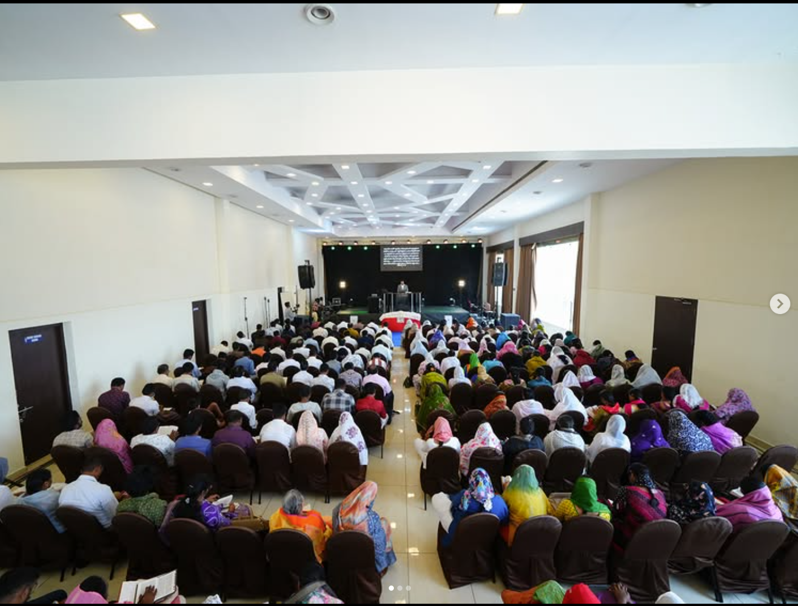

48:20
48:20
21 Days Fasting Prayer – Seeking God's Will
Pastor N. Michael Paul
 52:10
52:10
Are You Really Living in God's Will?
Pastor N. Michael Paul
 44:15
44:15
Built on the Rock – 1 Corinthians 3:11
Pastor N. Michael Paul
 39:40
39:40
The Power of the Blood & Holy Communion
Pastor N. Michael Paul

55:30Walking by Faith, Not by Sight
Pastor N. Michael Paul
 41:00
41:00
The Table of the Lord – 1 Corinthians 11
Pastor N. Michael Paul
Never Miss a Sunday Livestream
Subscribe to Pastor N. Michael Paul's official YouTube channel for notifications when Sunday services and fasting prayers go live.
Subscribe on YouTube (@nmichaelpaul)